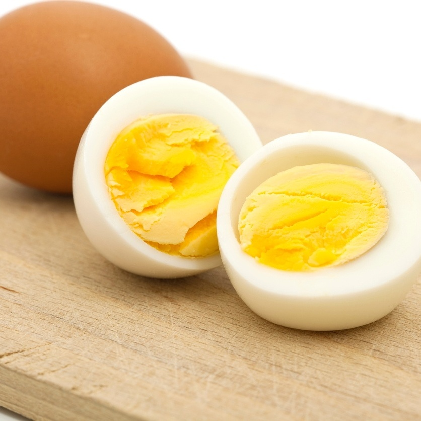

ALIMENTOS ACESSÍVEIS E SURPREENDENTEMENTE BENÉFICOS PARA O SEU CÉREBRO
1.
Brócolis: Rico em vitamina K, o brócolis ajuda na saúde cerebral e na prevenção de doenças neurodegenerativas 1.2.
Sementes de Chia: Essas sementes são ricas em fibras, vitaminas e minerais, contribuindo para a saúde geral e cerebral 2.3.
Peixes de Águas Frias: Fonte de ácidos graxos ômega-3, esses peixes (como salmão e sardinha) são excelentes para a saúde cerebral 3.4.
Açaí: Rico em antioxidantes, o açaí protege as células cerebrais e melhora a memória 2.5.
Ovos: Fonte de colina, os ovos são importantes para a saúde cerebral e a memória 3.6.
Feijão: Rico em fibras e proteínas, o feijão é uma excelente fonte de energia para o cérebro5. 😊🍎🥦 Saiba mais
Saiba mais 1 blog.matheustriliconeurologia.com.br 2 tuasaude.com 3 minhavida.com.br 4 jasminealimentos.com 5 unimed.coop.br